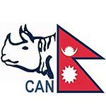

Cricket Association of Nepal
| Cricket Association of Nepal CAN |
|
|---|---|
|  | |
| Sport | Cricket |
| Jurisdiction | National |
| Founded | 1946 |
| Affiliation | International Cricket Council |
| Affiliation date | 1988 |
| Regional affiliation | Asian Cricket Council |
| Affiliation date | 1990 |
| Headquarters | Kathmandu, Nepal |
| President | Binaya Raj Pandey[1] |
| Chief Exec | Bhawana Ghimire |
| Vice president | Shree Harsha Koirala |
| Secretary | Ramesh Kumar Silwal |
| Men's coach | Pubudu Dassanayake |
| Women's coach | Shyam Sun Jung Thapa |
| Other key staff | Prakash Maharjan (Finance Manager) |
| Operating income | Undisclosed |
| Sponsor | Nepal Telecom C.G. Foods Nepal Century Bank BS Sports |
| Official website | |
| www |
|
{kind=link}
Cricket Association of Nepal is the official governing body of the sport of cricket in Nepal. Its current headquarters is in Kathmandu, Nepal. Cricket Association of Nepal is Nepal's representative at the International Cricket Council and is an associate member and has been a member of that body since 1988. It is also a member of the Asian Cricket Council. The association has selected Mahendra Singh Dhoni as their brand ambassador.[2]
The board was dissolved by the government of Nepal in November 2014 on the grounds of incompetence and a three-member ad hoc committee was established with a new president designated by the government itself.[3]
Contents
[hide]Overview[edit]
Nepal’s position at the top of the ACC rankings rests firmly on its overwhelmingly consistent performance at all levels of competition. At age-group level, they simply clean up. Wins in U-19 World Cups against Pakistan, New Zealand and South Africa have been based on disciplined, error-free cricket and they showed in their thrilling last-wicket victory over New Zealand in the 2006 event that they possess boundless desire for success.
Sri Lanka’s legendary batsman Roy Dias who took over as coach in 2001 has been the architect of Nepal’s triumphs and he has moulded a nation high on enthusiasm and short of experience into a fine competitive force. No greater evidence of his ability to maximise the skills of his charges can be seen than by the performance of the U-15 team in the 2006 ACC Elite Cup. Only two of the Nepal squad had ever played any form of competitive cricket before reaching Malaysia to play the event, two weeks later they had won it. The opposition wasn’t bad, far from it. It was just that Nepal did the basics and then just a little bit more, very well thanks to all that their coach had inspired them to learn.
The one level they have yet to master is that of the seniors, where they have so far found the seasoned talents of a full-strength Afghanistan just that little bit too much for them. But they’re pushing, they’re certainly pushing and the battle between them and Afghanistan should be fascinating in the years ahead.
A regime change at the Cricket Association of Nepal has led to the adoption of a more professional approach to development. Greater sponsorship and more focused domestic competitions have been the result. Work has already started on a national Academy, felt to be vital given the extremes of Nepal’s weather for indoor practice, which will be partly funded by the ACC. Nepal plays most of its international matches at the Tribhuwan University International Cricket Ground in the outskirts of Kathmandu. Other grounds include Engineering College Ground in Pulchowk. A host of other grounds are used for domestic tournamants including Tudikhel, Army School Ground and Lab School Ground. Various cricket academy has surfaced since 2010, like Sangrila Cricket Academy, Dhangadi Cricket Academy and Jhapa Cricket Academy. The National Cricket Academy started functioning since late 2011. CAN has partly funded two upcoming national cricket academies in Mulpani and Pokhara.
The current coach is Pubudu Dassanayake and he has added batting strength which had long been the Achilles' heel for Nepalese cricket. Under Pubudu Dassanayake, Nepal has won World Cricket League 4 and 3 (twice). Nepal participated in the 2014 ICC World Twenty20 in Bangladesh in March 2014, where they produced some eye-catching performances & narrowly missed out on next round only upon net run rate. As a result, they were awarded T20 International status by the ICC along with the Netherlands.
Presidents[edit]
- Binay Raj Panday (Interim) (Since November 2014) [1] He was appointed after the previous working committee formed under Tanka Angabuhang was dissolved by the Government.
- TB Shah (Interim) (June 2014 - November 2014)[4]
- Tanka Angbuhaang (December 2011 - June 2014)[4][5] He was politically appointed by the Maoist government of Nepal. He has no cricketing or sports administration background. During his reign he appointed new coach, made bilateral ties with minor cricket teams in India.
- Binay Raj Pandey (Sep 2006 - Dec 2011) [6] A long serving cricket administrator with business background. He was forced out by Maoist government showing his failure to hold an election, a requirement of International Cricket Committee.
- Jay Kumar Nath Shah (since 1966 - Sep 2006= 40 years) [7] One of the longest serving cricket association president in the world. He was forced out for failure to hold an election and improve the game in country.
Paras Khadka is the current captain and one of the biggest sports celebrities in Nepal. Mehboob Alam of Nepal holds world record in ICC sanctioned cricket games for taking all 10 wickets in limited over (50 overs) game. He took all 10 wickets against Mozambique in World Cricket League Division Five in Jersey in 2008. Cricket players are well recognized celebrities in the country. Former captain Binod Das runs his own chat show in national television, with plenty of current players signed up by business houses as brand ambassadors.
Controversies[edit]
Despite unprecedented success on the field, including victories over Hong Kong and Afghanistan at the 2014 ICC World Twenty20, Nepal went through some turmoil off the field in 2014 with a boycott of the national one-day tournament by the national players with the captain Paras Khadka slamming the Cricket Association of Nepal for their treatment of national players.[8]
The board then came under an investigation by the Commission for Investigation into Abuse of Authority.[9] Later, CIAA filed a case against 18 CAN members including the then President Tanka Aangabuhang, after finding them guilty of misusing around Rs. 14.31 million, which was to be used for developing the game in the country instead.[10][11] This resulted in several CAN members stepping down from their posts on moral grounds.
In May, members of CAN filed a no-confidence motion against president Tanka Angbuhang Limbu, after the running of the Nepal Premier League was outsourced to a private sports management firm.[12]
In March, the CAN had said Nepal coach Pubudu Dassanayake would get a year's extension to his contract. However, he was only given a three-month extension, which ran out later June.[13] The change in terms, CAN secretary Ashok Nath Pyakuryal said, was due to the board being under investigation. The coach left the country on June 4 due to unresolved contractual issues.[14]
But Nepal Government intervened and handed Dassanayake a year’s extension. Dassanayake returned to Nepal on August 29 after being invited by the government and was reappointed coach of Nepal's senior and Under-19 cricket teams.[15]
After all these controversies in the year 2014, the Nepal Government dissolved the Angbuhang led CAN committee on 6 November and formed an ad hoc committee under former president Binaya Raj Panday on interim basis.[1]
Rhino Fans[edit]
Known as the Rhino Fans,[16] Nepal has one of the most passionate fan-base outside the full members. Each international home match gathers a crowd of 8,000 - 10,000. Some of the more crucial matches have had estimated attendance of more than 20,000. National televisions regularly broadcast live matches held in Nepal and often from abroad. Since 2012 they have started broadcasting some domestic matches as well.
See also[edit]
- Nepal national cricket team
- Nepal national women's cricket team
- Nepal Under-19 cricket team
- List of First-class cricket matches played by Nepal
- List of List A cricket matches played by Nepal
- List of Twenty20 cricket matches played by Nepal
- National League Cricket
- List of Nepal Twenty20 International cricketers
- List of Nepalese First-class cricketers
- List of Nepalese List A cricketers
- List of Nepalese Twenty20 cricketers
- List of Nepal Twenty20 International records
References[edit]
- ^ Jump up to: a b c "Govt dissolves CAN". eKantipur (Kathmandu). 6 November 2014. Retrieved 6 November 2014.
- Jump up ^ "Dhoni appointed brand ambassador of cricket in Nepal although his involvement in promoting Nepal with BCCI or other cricketing board has not been seen so far.". The Times Of India. 18 June 2012.
- Jump up ^ "Cricket Association of Nepal board dissolved by government". ESPNcricinfo. Retrieved 6 November 2014.
- ^ Jump up to: a b "CAN top brass step down". The Himalayan Times (Kathmandu).
- Jump up ^ "Tanka Abuhaang elected president of can". 19 Dec 2011.
- Jump up ^ "BINAYA RAJ PANDEY: CRICKET DIPLOMAT".
- Jump up ^ "Shah rejects appointment".
- Jump up ^ "Nat'l cricketers boycott every tournament". eKantipur (Kathmandu). 10 April 2014. Retrieved 10 April 2014.
- Jump up ^ Ghimire, Santosh (12 April 2014). "CIAA begins probe against CAN". My República (Kathmandu). Retrieved 12 April 2014.
- Jump up ^ "CIAA filed corruption case against CAN office bearers". Reporters Nepal (Kathmandu). 8 June 2014. Retrieved 8 June 2014.
- Jump up ^ "CIAA files graft case against 18 individuals, including CAN top guns". My República (Kathmandu). 8 June 2014. Retrieved 8 June 2014.
- Jump up ^ "CAN prez Aangbuhang under pressure to quit". eKantipur (Kathmandu). 26 May 2014. Retrieved 26 May 2014.
- Jump up ^ Oli, Prajwak (29 April 2014). "CAN extends Dassanayake contract only 3 months". My República (Kathmandu). Retrieved 29 April 2014.
- Jump up ^ "Coach bids adieu amid contract dispute". eKantipur (Kathmandu). 5 June 2014. Retrieved 5 June 2014.
- Jump up ^ "Dassanayake set for August 28 return". eKantipur (Kathmandu). 20 August 2014. Retrieved 20 August 2014.
- Jump up ^ "Rhino Fans".
External links[edit]
- Official Website of Cricket Association of Nepal
- Cricket Association of Nepal on Facebook
- Cricket Association of Nepal on Twitter
|
||||||||||||||||||||||||||||||||||||||
|
||